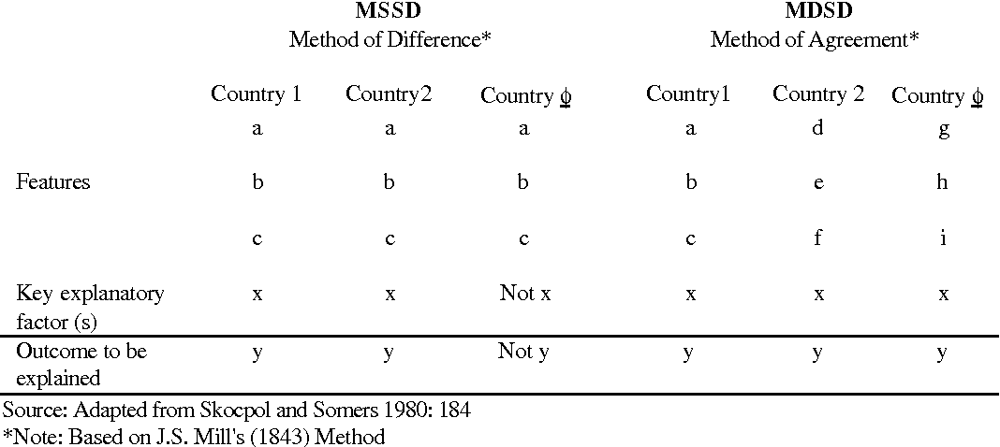

Femte Faglige Seminar
Gard Olav Dietrichson
03-10-2022
Plan for i dag
- Gjennomgå oppgaven
- Tilbakemelding
- Løsningsforslag
- Litt nærmere om casestudier og caseutvalg
- Åpen spørretid
- Pause
- Gruppeaktivitet
Temaet for i dag er casestudier
- En form for forskningsdesign
- Brukes som regel i en kvalitativ forståelse
- Kan ha mange ulike formål, teorigenererende, hypotesetestende,
etc.
Dette er en artikkel som ligger nært det jeg har studert
- Referensene er mange som går igjen i min egen Master
- Slik som Norris & Lovenduski (1995), Hughes (2014), Phillips
(1999), etc.
- Hvis noen er interessert i andre aspekter ved feltet, si gjerne i
fra
Kvalifiseringsoppgaven
Les artikkelen “The complementarity advantage: parties,
representativeness and newcomers’ access to power” av Karen Celis og
Silvia Erzeel. Fokuser på artikkelens generelle forskningsdesign: hva er
analyseenhet og hvordan har forskerne valgt ut «case»? Og hva slags data
baserer de seg på? Bruk definisjonene fra forelesning: med «case» mener
vi her ikke landene i studien selv om disse benevnes som «case». Et tips
er å starte med å se på artikkelens hypoteser.
Generell tilbakemelding
- Hva var bra?
- Case var det mange som hadde fått med seg riktig på
- Analyseenhet var ofte nære
- Hva var dårlig?
- Forholdet mellom analyseenhet og case var ikke alltid så godt
presisgjort
- Mange bommet på en, men traff (ish) på en annen
- De fleste var også nære på analyseenhet
- Men det er litt mer generelt enn bare Belgiske partier vedkommende
prøver å si noe om
Generell tilbakemelding
- Hva kunne vært enda bedre?
- Forbedre struktur på hvordan case er utvalgt
- Det er flere skritt involvert
- Bruke begrepene relatert til casestudier
- Hvorfor hver av de skrittene
Løsningsforslag
- Analyseenhet er politiske partier
- Det er nettopp atferden til disse enheten som forfatterne ønsker å
forklare
- Hvorfor velger partier å rekruttere så mange
minoritetskvinner?
- Casene er mer spesifikt da, de fire partiene som studeres
- De spesifikke casene velges ut i et ledd med innsnevringer
- Det er Belgiske partier
- Det er flemske Belgiske partier
- Det er akkurat disse partiene
- Belgia, Flandern, Fire partier
Løsningsforslag
- Det er i stor grad snakk om typisk case utvalg
- Dette gjelder i alle trinnene
- Belgia er typisk, på grunn av ting som valgssystem
- Flandern er nyttig fordi det har en vanlig partifamilie
- Disse partiene representerer et bredt spektrum, og utgjør derfor
typiske partier
I dette tilfelle
- Legg mye fokus på seksjon 6
- “Diskusjon” seksjonen
- Passende, da det er her man ofte diskuterer hvor “gjeldende” funnene
er for andre tilfeller
Litt nærmere om casestudier
- Vi kan starte med litt begrepsavklaring
- Artikkelen sier “the case of Belgium”
- Det er en vanlig forståelse av Case
- og største kilden til ikke-godkjent i fjor
- Case er tilfelle av analyseenheten
- SETT INN BILDE AV ANALYSEENHETER NIVÅER HER
Litt nærmere om casestudier
- Casestudier er:
- Den intensive analysen (enten kvalitativ eller kvantitativ) av en
enkel eller smått antall av enheter, der forskerens mål er å forstå en
større klasse av enheter.
- Seawright & Gerring, 2008.
Litt nærmere om casestudier
- Vi har det som heter caseutvalgslogikk
- casestudier gjør implisitt et valg om å studere enkelte
tilfeller
- Men dette utvalget må ha en god grunn, det må foreligge en god årsak
til å se på akkurat disse tilfellene
- Her kommer hovedtypene inn
Litt nærmere om casestudier
- Typisk
- Mangfoldig (diverse)
- Ekstreme
- Avvikende
- Innflytelsesrike
- MSSD
- MDSD
Finnes også andre typologier
Typisk
- Er et eksempel på et mer teorigenererende design
- Man finner frem tilfeller som man mener er “typiske” som avviker
lite fra normale forhold
- Prøver å etablere en grunnleggende studie av hvorfor et fenomen
skjer
- Når vi velger på variabler, kan dette hjelpe oss illustrere eller
utforske mekanismer
- Mangfoldig casestudier faller litt under her
- Demonstrere også at ikke alle bruker samme begrepsfamilie
MSSD og MDSD
- SETT INN ET BILDE HER SOM ILLUSTRERER SAMMENHENGEN, GJERNE TO

Casestudier og generalisering
- Caselogikk legger føring på hva slags ekstern validitet du
ønsker
- Motivasjonen for valg av en logikk er relatert hva du ønsker at
casene dine skal bidra til den større verden med
For mer om casestudier
- Les gjerne:
- J. S. Levy (2008), “Case Studies: Types, Designs, and Logics of
Inference”.
- Seawright & Gerring (2008), “Case Selection Techniques in Case
Study Research: A Menu of Qualitative and Quantitative Options”.
Litt ekstra om analyseenheter på nytt
- Som vi har snakket om tidligere eksisterer analyseenheter på flere
nivåer
- Siden case er tilfelle av analyseenheter er disse veldig
sammenfallene
- Poenget med case er å belyse fakta og tilstander ved analyseenhetene
- Teknisk sett er de observasjonene vi bruker i kvantitativ også
“case”
- Men begrepet brukes sjeldent her
Demonstrasjon av nivåer
- Sett inn et bilde her av analyseenhet nivåer
Åpen spørretid
- Noe dere har møtt på den siste uken som dere lurer på?
Neste kvalifiseringsoppgave
Les artikkelen ” The Islamic State’s Pattern of Sexual Violence:
Ideology and Institutions, Policies and Practices” av Mara Redlich
Revkin og Elisabeth Jean Wood.
Velg ut to sentrale
begreper/variabler i denne artikkelen og forklar hvordan de måles
empirisk (dvs. er «operasjonalisert»).
Til neste gang!
- Ta med godt humør!
- Lever i tide!!
- Takk for i dag!!!